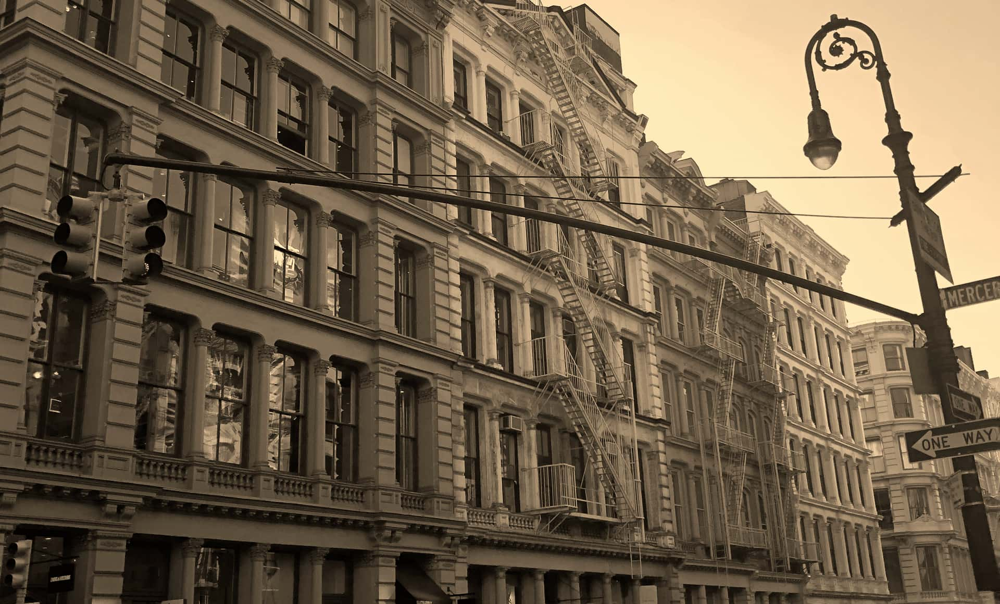
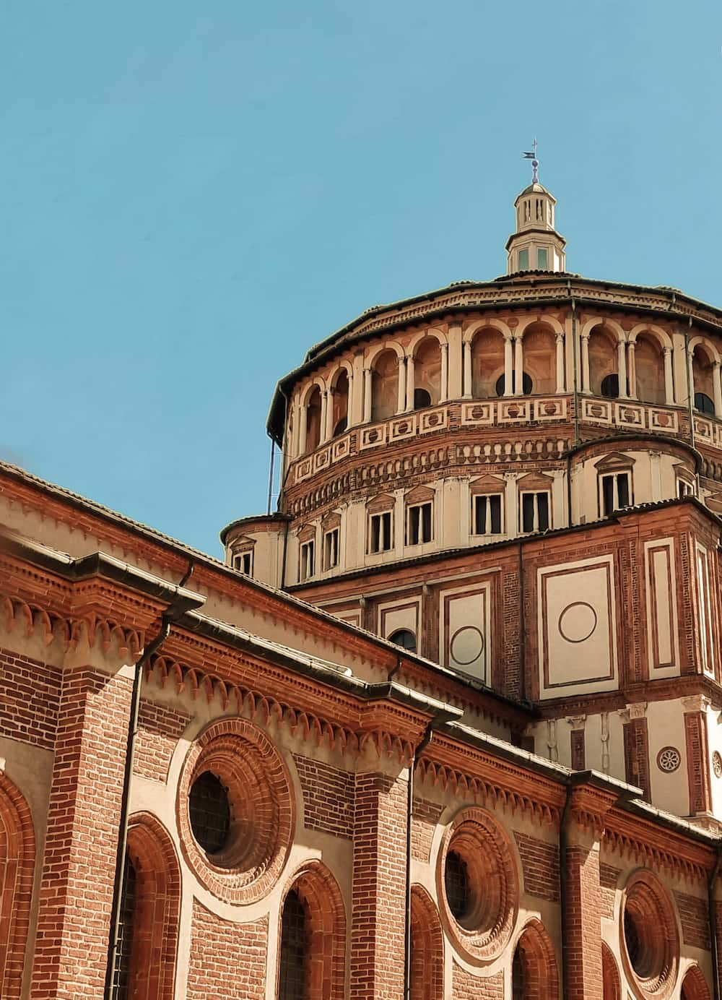
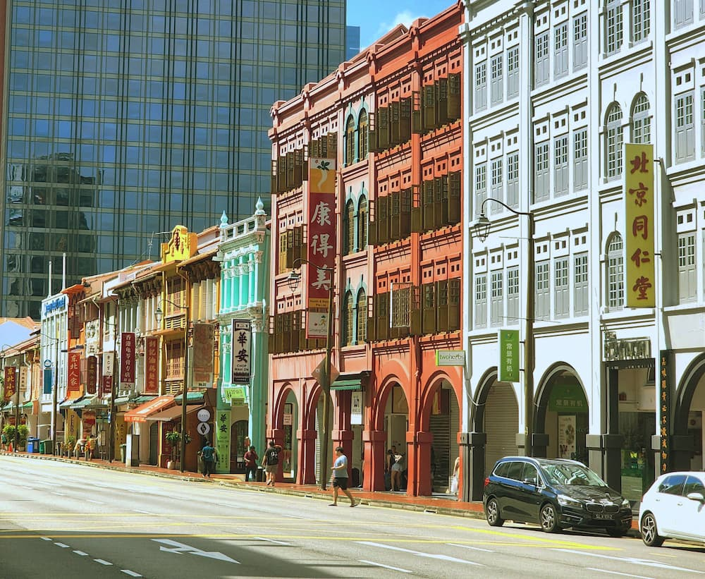
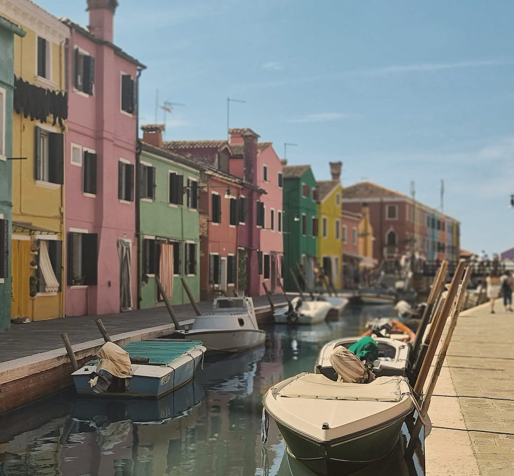

Perspektiv
Arkitektur • Fotografi • Form
På denna webbplats presenteras en bildserie med fokus på arkitektur och byggnader från olika delar av världen. Syftet med uppgiften är att bearbeta och anpassa fotografier för webben med hjälp av olika bildredigeringstekniker.
Bilderna har redigerats i Affinity, där bland annat färger, ljus, kontrast och beskärning har justerats för att skapa ett mer enhetligt uttryck.


